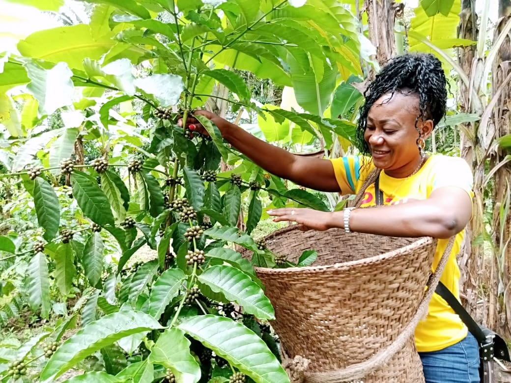
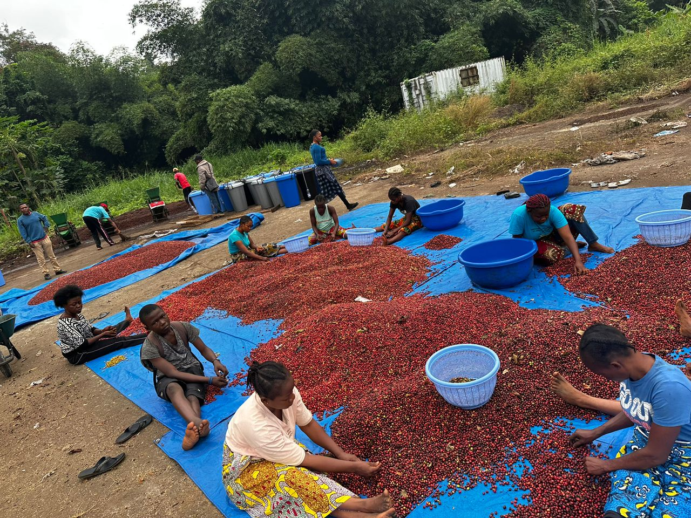
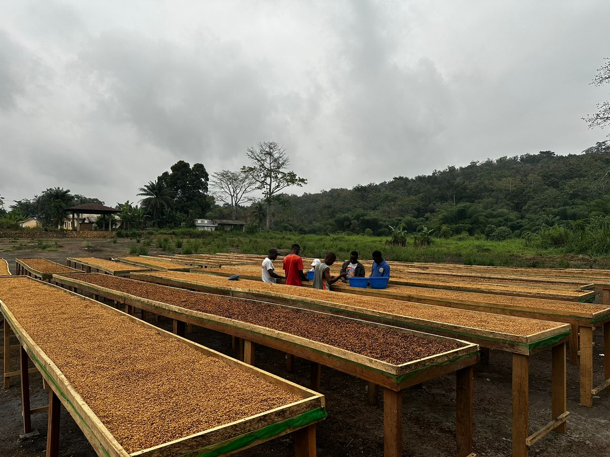
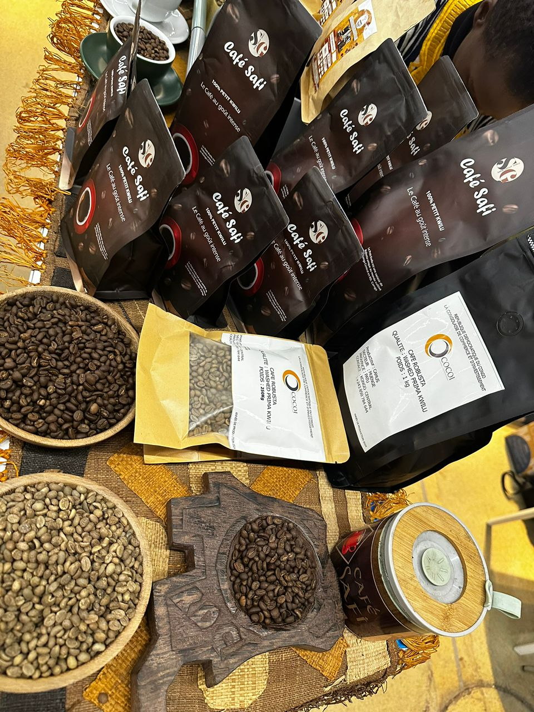

Discover
From Bean to Cup: Our Process
Witness the fascinating journey of coffee beans as they transform from raw cherries to your aromatic cup.

1. Picking
Only the ripest coffee cherries are hand-picked to ensure the highest quality beans.

3. Drying
Beans are spread out in the sun or placed in mechanical dryers to reach the optimal moisture content of 11-12%.

4. Milling
The dried beans undergo hulling, polishing, grading, and sorting to prepare them for export to roasters worldwide.

1. Picking
Picking the coffee flower is a delicate process. Farmers carefully select the blossoms at their peak, ensuring only the healthiest flowers are chosen. This step is crucial, as it determines the future quality of the coffee beans that will develop from these flowers.

2. selecting
After harvesting, we carefully sort through all the picked coffee cherries, selecting only the ripest and healthiest beans. This meticulous selection process ensures that only the highest quality beans move forward, guaranteeing exceptional flavor and consistency in every cup.

3. Processing
Once the best coffee beans are selected, they are thoroughly washed to remove any remaining pulp and impurities. After washing, the beans are carefully dried—either under the sun or using mechanical dryers—until they reach the ideal moisture level, preserving their quality and flavor. Next, the dried beans undergo mechanical processing using specialized milling machines. This step involves hulling to remove the parchment layer, followed by polishing to enhance the beans' appearance. The beans are then graded and sorted by size and weight, ensuring only the finest beans move forward. This meticulous processing guarantees consistency and prepares the coffee beans for roasting, unlocking their full flavor potential.

4. Packaging and Distribution
After the coffee beans have been meticulously processed, they are carefully packaged to preserve their freshness and rich aroma. We use high-quality, airtight packaging materials that protect the beans from moisture, light, and air. Once sealed, the coffee is distributed through our trusted network, ensuring it reaches cafes, retailers, and customers in perfect condition. This final step guarantees that every cup brewed from our beans delivers the exceptional flavor and quality our brand promises.